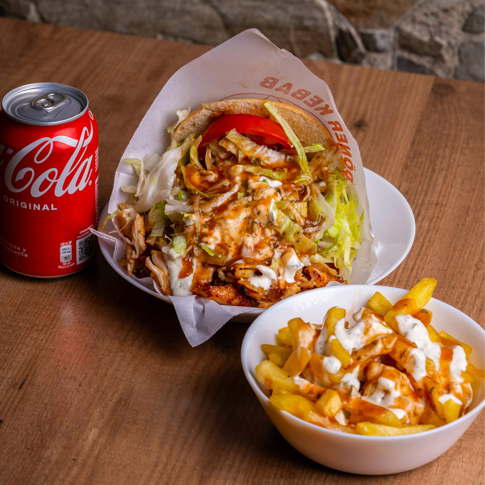

Orígenes del Kebab

Nuestra pasión y curiosidad por la gastronomía nos ha llevado a explorar técnicas únicas, especialmente la de cocinar carne en un pincho que gira lentamente sobre el fuego.
Este método, llamado "döner" (que literalmente significa “carne giratoria”), es muy apreciado en Turquía y otros países de Oriente Medio.
Nosotros lo hemos adoptado para darle a nuestros platos ese sabor auténtico y especial que encontrarás en nuestra carta.
Conocimiento del producto

Cada plato que preparamos refleja nuestro profundo conocimiento de los ingredientes que utilizamos.
Seleccionamos cuidadosamente cada carne, cada especia y cada acompañamiento, entendiendo cómo se combinan para lograr sabores auténticos y equilibrados.
Gracias a esta atención al detalle y a nuestra experiencia, cada bocado transmite la calidad y dedicación que ponemos en nuestra carta.
Comida rápida con calidad

Hacemos comida rápida porque creemos que disfrutar de platos deliciosos no debería requerir largas esperas.
Queremos que cada persona pueda saborear la calidad y el sabor de nuestra cocina de manera ágil y accesible,
sin perder la frescura ni la autenticidad que caracteriza a cada preparación.